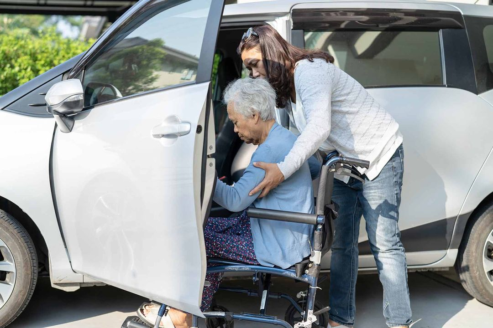

Northwestern medical transport provides doctor's visits and
Non-Emergency medical transportation near Chicago
Northwestern Medical Transport, a team of professionals in Chicago,
provides top-quality medical transportation for doctor visits,Physical Therapy, out-of-town Specialists,
and other Medical Visits. Our fleet includes fully equipped medicare designed for easy boarding for the passengers.
Count on NorthWestern Medical Transport for reliable and specialized medical transport services.
JUST A FEW TRIPS NORTHWESTERN MEDICAL TRANSPORT SERVICES CAN COVER:
• Doctor's Appointments
• Physical Therapy
• Out-Of-Town Specialists
• Dialysis
• Drug pickup
• Blood draw
• Eye doctor
• Dentist
• Physical Therapy
• Out-Of-Town Specialists
• Dialysis
• Drug pickup
• Blood draw
• Eye doctor
• Dentist
Your driver will come to your house or any other destination help you into
the vehicle, and then safely drive you wherever you need to go.

Why Should I Book Medical Transportation Close to Me with NorthWestern Medical Trasport?
Northwestern Medical Transport provides a convenient and supportive doctors' visit transportation
service for individuals without personal means of travel. Our licensed, highly trained drivers ensure a comfortable experience in our
spacious, handicap-accessible vehicles. Whether attending a doctor's appointment or requiring caregiver support,
we prioritize your comfort and well-being. Trust our experienced team and GPS-equipped vehicles to seamlessly transport you to and from your destination with professionalism and care.
Your health and convenience are our priorities at NorthWestern Medical Transport.
Wheelchair Transportation Chicago for Doctor Visits, Appointments, or Physical Therapy
As specialists in non-emergency medical transportation serving the Chicago area,
NorthWestern Medical Transport, caters to groups and individuals with special needs, particularly
the elderly and disabled requiring more care than standard accessible taxis offer. Our services
extend to ambulatory individuals, including those with mobility aids like canes or walkers, and
clients in wheelchairs or stretchers.NorthWestern Medical Transport excels in providing reliable,
high-quality medical services, addressing the transportation needs of patients with recurring medical
appointments, and ensuring professional care for physical therapy or regular checkups in Chicago.